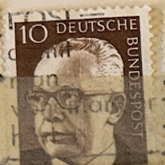
| SOURCE | TITLE| IMAGE MATCH | click to source page |
| eBay | GERMANY 1029 - President Gustav Heinemann "1970 Brown" (pc14359) | eBay | 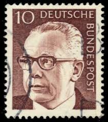 |
| eBay | GERMANY 1037 - President Gustav Heinemann "1971 Magenta" (pb46460) | eBay | 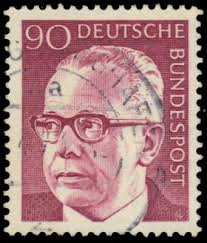 |
| eBay | BERLIN 9N286 - President Gustav Heinemann "1971 Brown" (pc17763) | eBay | 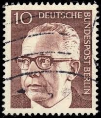 |
| Alamy | President of germany 1969 1974 hi-res stock photography and images - Alamy |  |
| Poppe Stamps | Poppe Stamps: German Federal Republic, 1970, 1536, Presidents, Presidents - stamps for sale by theme and country | 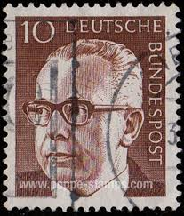 |
| Poppe Stamps | Poppe Stamps: German Federal Republic, 1970, 1536, Presidents, Presidents - stamps for sale by theme and country |  |
| eBay UK | BRD FRG #Mi732 MNH 1973 Gustav Heinemann President [1043 YT516H SG1554] | eBay UK | 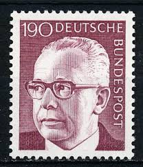 |
| Poppe Stamps | Poppe Stamps: German Federal Republic, 1970, 1536, Presidents, Presidents - stamps for sale by theme and country | 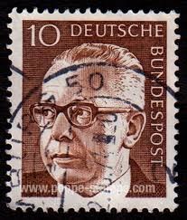 |
| Poppe Stamps | Poppe Stamps: German Federal Republic, 1970, 1536, Presidents, Presidents - stamps for sale by theme and country | 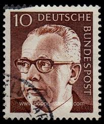 |
| HipStamp | Germany 1029 USED | Europe - Germany & Colonies - Germany, General Issue Stamp / HipStamp |  |
| Poppe Stamps | Poppe Stamps: German Federal Republic, 1970, 1546, Presidents, Presidents - stamps for sale by theme and country |  |
| Dreamstime.com | GERMANY - CIRCA 1970: a Postage Stamp from Germany, Showing a Portrait of the Politician and Federal President Gustav Editorial Photo - Image of postmark, leader: 244396426 | 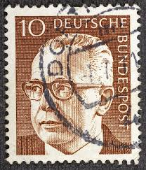 |
| eBay | GERMANY WEST DEUTSCHE BUNDESPOST 1970 GUSTAV HEINEMANN 30 BROWN RED USED TKS270* | eBay |  |
| Dreamstime.com | Isolated German Bohemia and Moravia Stamp Editorial Photo - Image of letter, issue: 383932011 | 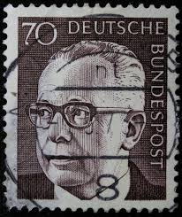 |
| allnumis.com | 40 Pfennig Gustav Heinemann (1899-1976) 1971, People - Personalities-man - Germany - Stamp - 5888 | 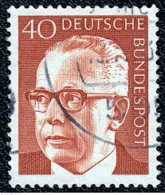 |
| iStock | Postage Stamp Germany Ddr 1951 Stalin And Wilhelm Pieck Stock Photo - Download Image Now - iStock |  |
| Poppe Stamps | Poppe Stamps: German Federal Republic, 1970, 1546, Presidents, Presidents - stamps for sale by theme and country | 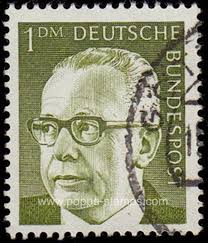 |
| Dreamstime.com | Gustav Heinemann, President of the Federal Republic of Germany Editorial Stock Image - Image of philatelic, philately: 177916989 |  |
| Shutterstock | 8 Kurt Georg Kiesinger lizenzfreie Bilder, Stockfotos und Aufnahmen | Shutterstock | 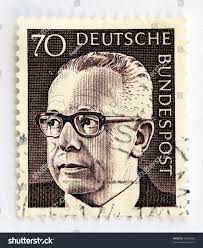 |
| Alamy | Stamp printed in Germany, shows signature of Ernst Heinrich Wilhelm von Stephan, was a general post director for the German Empire who reorganized the Stock Photo - Alamy | 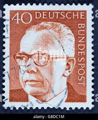 |
| iStock | Former German President On An Old Stamp Stock Photo - Download Image Now - 1971, Black Background, Black Color - iStock | 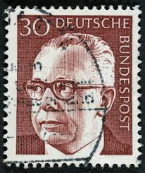 |
| Dreamstime.com | Isolated German Polizei Logo in Front of Police Station Against Blue Sky Editorial Image - Image of germany, german: 178790435 | 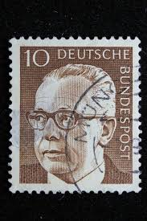 |
| Shutterstock | Karnal Haryana India -august 5th 2025-closeup Stock Photo 2671225937 | Shutterstock | 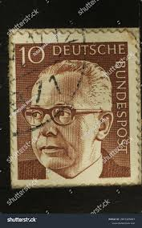 |
| Etsy | 40 Bundespost Deutsche Stamp , Postage Ad2 Black Cancelled Used….. - Etsy |  |
| Alamy | Gustav heinemann president west germany hi-res stock photography and images - Alamy | 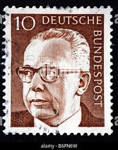 |
| Dreamstime.com | Gustav Heinemann, 3rd Federal President of Germany. Editorial Photography - Image of stamp, history: 388843222 | 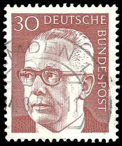 |
| Shutterstock | 60+ Thousand Famous Stamps Royalty-Free Images, Stock Photos & Pictures | Shutterstock |  |
| Dreamstime.com | 147 Turkey 1970 Stock Photos - Free & Royalty-Free Stock Photos from Dreamstime | 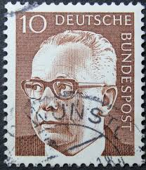 |
| Alamy | postage stamp West Germany 30 featuring 20 years as a Federal Republic issued 1969 Stock Photo - Alamy |  |
| Shutterstock | 40 Stamp: Over 2,522 Royalty-Free Licensable Stock Photos | Shutterstock | 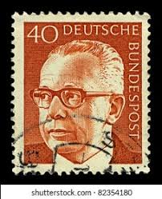 |
| Shutterstock | 3+ Hundred Mark Walters Royalty-Free Images, Stock Photos & Pictures | Shutterstock |  |
| Shutterstock | Stamp Prize: Over 2,596 Royalty-Free Licensable Stock Photos | Shutterstock | 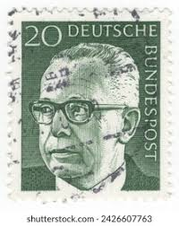 |
| iStock | Swedish Stamp Shows King Carl Xvi Gustaf Stock Photo - Download Image Now - Black Color, Close-up, Crown - Headwear - iStock |  |
| Amazon.com | Amazon.com: FRD (FR.Germany) 727-732 (Complete.Issue) unmounted Mint/Never hinged ** MNH 1973 Gustav Heinemann (Stamps for Collectors) : Toys & Games |  |
| Dreamstime.com | 6,170 Glasses Mail Stock Photos - Free & Royalty-Free Stock Photos from Dreamstime - Page 55 | 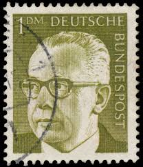 |
| Todocolección | música series nuevas completas alemania - Buy Antique stamps of Germany on todocoleccion | 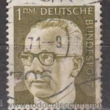 |
| Dreamstime.com | Federal President Dr. Gustav Heinemann Editorial Photo - Image of perforated, stamp: 113622021 | 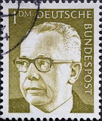 |
| Alamy | President heinemann hi-res stock photography and images - Alamy | 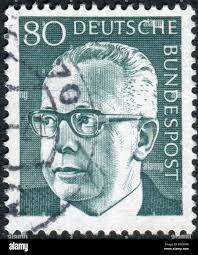 |
| Shutterstock | 8 Kurt Georg Kiesinger Royalty-Free Images, Stock Photos & Pictures | Shutterstock | 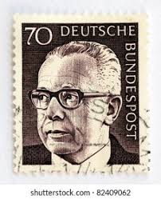 |
| Mystic Stamp Company | 1029-30 - 1970 Germany - Mystic Stamp Company | 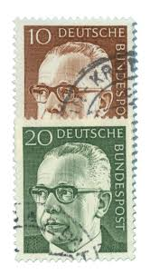 |
| Shutterstock | C Envelope Stamp: Over 710 Royalty-Free Licensable Stock Photos | Shutterstock | 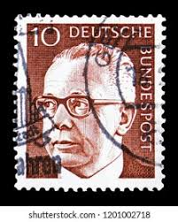 |
| Alamy | 1899 1976 hi-res stock photography and images - Alamy | 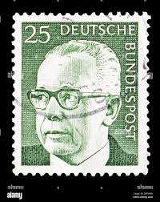 |
| Shutterstock | 1+ Thousand West Germany Postage Stamps Royalty-Free Images, Stock Photos & Pictures | Shutterstock | 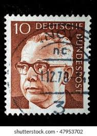 |
| Shutterstock | 5+ Hundred Heinemann Royalty-Free Images, Stock Photos & Pictures | Shutterstock | 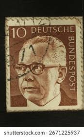 |
| Shutterstock | Circa Germany West: Over 1,138 Royalty-Free Licensable Stock Photos | Shutterstock | 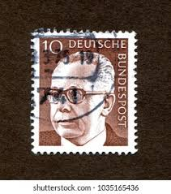 |
| Dreamstime.com | 117 Gustav Heinemann Stock Photos - Free & Royalty-Free Stock Photos from Dreamstime | 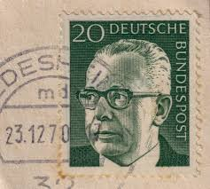 |
| Shutterstock | Pasuruan Indonesia August 29 2025 Germany Stock Photo 2679542411 | Shutterstock | 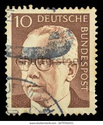 |
| Alamy | Dr gustav heinemann hi-res stock photography and images - Alamy | 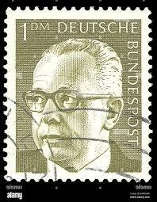 |
| Shutterstock | 2+ Thousand Deutsche Bundespost Royalty-Free Images, Stock Photos & Pictures | Shutterstock |  |
| The Philately | Germany 1971-1972 Mi 689-692 Federal President Dr. Gustav Heinemann Sc 1030A, 1034, 1039, 1042 for sale at The Philately | 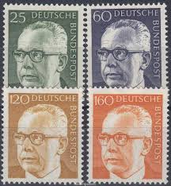 |
| ebid.net | issued 1961 - italy stamp with art theme - 50 Lire - see 20 Lire Italy art stamp on eBid United Kingdom | 208208224 | 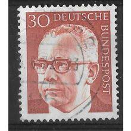 |
| Alamy | Influential political intellectual hi-res stock photography and images - Alamy |  |
| MA-Shops | 6 Werte 1972 BRD, Mi-Nr. 727-32, postfrisch Gustav Heinemann | MA-Shops |  |
| Alamy | Gustav heinemann president west germany hi-res stock photography and images - Alamy | 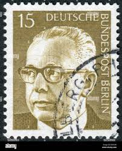 |
| Shutterstock | deutsche_post": Over 5,976 Royalty-Free Licensable Stock Photos | Shutterstock | 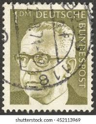 |
| eBay | GERMANY WEST DEUTSCHE BUNDESPOST 1970 GUSTAV HEINEMANN 10 BROWN - USED TKS272* | eBay |  |
| eBay | GERMANY 1039 - President Gustav Heinemann "1972 Ocher" (pc14379) | eBay |  |
| eBay | GERMANY 1038A - President Gustav Heinemann "1973 Olive Grey" (pc14377) | eBay | 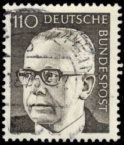 |
| eBay | West Germany - 1970 - Gustav Heinemann - 30Pfg - Used - #04 | eBay | 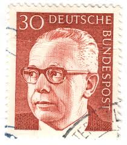 |